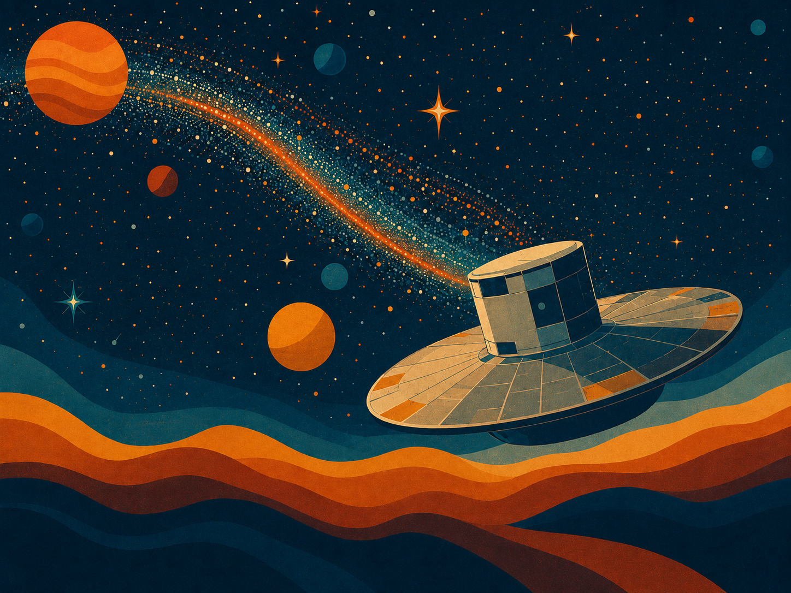

YEMS talks 2026
Science outreach activities led by YEMS researchers.
Young exoplanets, exomoons and planet formation from Chile.
New result: YEMS PhD student Andrea Bernardi confirms Elias 2-24 b, the youngest known planet


The Millennium Nucleus on Young Exoplanets and their Moons (YEMS) is a multidisciplinary research centre bringing together astronomers and computer scientists from four leading Chilean universities: UDP, USACH, PUC and UdeC. Funded by ANID’s Millennium Science Initiative, our mission is to detect and characterise young exoplanets and exomoons, revealing how these distant worlds form and evolve.
Background image: “Eclipsed moon, striking night sky” by ESO/Y. Beletsky.
Our latest discoveries, publications, events and outreach activities.

YEMS PhD student Andrea Bernardi confirms Elias 2-24 b, the youngest known planet

Strong YEMS participation at the international Discs on the Exe conference

YEMS-led team reports in Nature evidence of a satellite orbiting a brown dwarf

First Astrodiálogos Lickan Antay Star Map launched in Toconao

YEMS team leads intensive programme during Astronomy Day Week

YEMS researchers reveal the adolescence of new worlds

Gaia finds hints of planets hidden in baby star systems

YEMS secures funding for astronomy education and outreach

YEMS 2025 Annual Meeting at Termas del Corazón

YEMS promotes a children's book in Rapa Nui connecting astronomy and ancestral knowledge

YEMS researcher discovers gigantic exo-Kuiper belt around HD 126062

YEMS is hiring. We have funding for postdoctoral fellows. Come work with us!

AIP highlights YEMS paper for bringing frontier astrophysics into classrooms

YEMS astronomers witness possible planet birth in V960 Mon

Concierto Cielos Album: Tahay y Añañuca

Astrónomo YEMS participa en importante resultado Nature Astronomy

ALMA Inspires New Models for the Evolution of Planet-Forming Discs

Launch of the "Exploring Exoplanets" Card Game

Let us protect our skies: an urgent call to action

Núcleo Milenio YEMS renueva financiamiento

Born in Fire: Eruptive Stars and Planet Formation

Orion's Erupting Star System Reveals Its Secrets

USACH and MIT team up to develop AI for planet formation research

New image reveals secrets of planet birth
For more news, visit our Instagram .
YEMS has become a leading centre for the study of planet and moon formation, with more than 145 peer-reviewed publications by July 2026. Our team produced the first observational evidence of planet formation through gravitational instability (Weber et al., ApJL), highlighted by ESO and ALMA, and has contributed to discoveries including the exoplanet AF Lep b and streamer-like flows in FU Orionis. With students and postdoctoral researchers presenting their work at international conferences, we continue to expand the frontier of exoplanet, exomoon and planet-formation research.
The link below provides the complete list of publications that include YEMS-affiliated researchers or acknowledge our centre .

Meetings that connect Chilean and international research communities



Educational, scientific and outreach resources
Explore materials produced by our team in astrophysics, education and science communication: educational activities, scientific tools, catalogues, software and open resources developed by YEMS researchers and collaborators. Most resources are currently available in Spanish.

Connecting planet-formation research with diverse communities
YEMS runs an active outreach programme including interactive stands, public talks and educational games that make astronomy engaging and accessible. Flagship projects include Concierto Cielos , which brings together science, music and art, and Astrodiálogos , an initiative that creates encounters between astronomy and territorial knowledge through educational and virtual-reality experiences.
Science outreach activities led by YEMS researchers.

Community encounters around astronomy and planet formation.

Astronomy outreach in schools, libraries and public spaces.

YEMS researchers sharing science with diverse audiences.

Encounters between astronomical knowledge and ancestral knowledge.

Intercultural dialogues connecting science, territory and community.

An initiative connecting modern astronomy with local worldviews.

Open conversations strengthening the relationship between science and society.

Collaborative encounters integrating different ways of understanding the sky.

Sebastián Pérez: eruptive stars and planet formation.

Jenny Blamey: astrobiology.

Tere Paneque: protoplanetary discs at USACH’s Aula Magna.

Antonio Hales: planet formation at USACH’s Aula Magna.

Carla Arce: planet formation at Teatro Lalo Parra in Cerrillos.

Alice Zurlo: the importance of water for life at USACH’s Aula Magna.

Antonio Hales: planet formation at USACH’s Aula Magna.

Philipp Weber: planet formation at USACH’s Aula Magna.

Camilo Gonzalez: protoplanetary discs at Teatro Lalo Parra in Cerrillos.

Sebastián Pérez: astronomy and jazz from the rooftop of Casona Compañía, Santiago 2024.

Irma Fuentes: the exoplanets Tahay and Añañuca at the Aula Magna.

Irma Fuentes: the exoplanets Tahay and Añañuca at the Aula Magna.
Dialogues with Lickan Antay communities in Toconao, northern Chile.
Exploring Wenumapu through virtual reality in Melipeuco, southern Chile.
Dialogues with Lickan Antay communities in Toconao, northern Chile.
YEMS is a multi-institutional centre involving Universidad de Santiago de Chile, Universidad Diego Portales, Pontificia Universidad Católica de Chile and Universidad de Concepción. It is funded by the ANID Millennium Science Initiative through centre codes NCN2021_080 (2021–2024) and NCN2024_001 (2025–2027).


Image and HTML credits: Background image related to the discovery of the first exomoon by our group Hoy et al. 2026, Credit: ESO/M. Kornmesser.
We are thankful to html5up for the "Story" template.